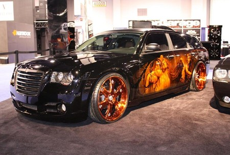
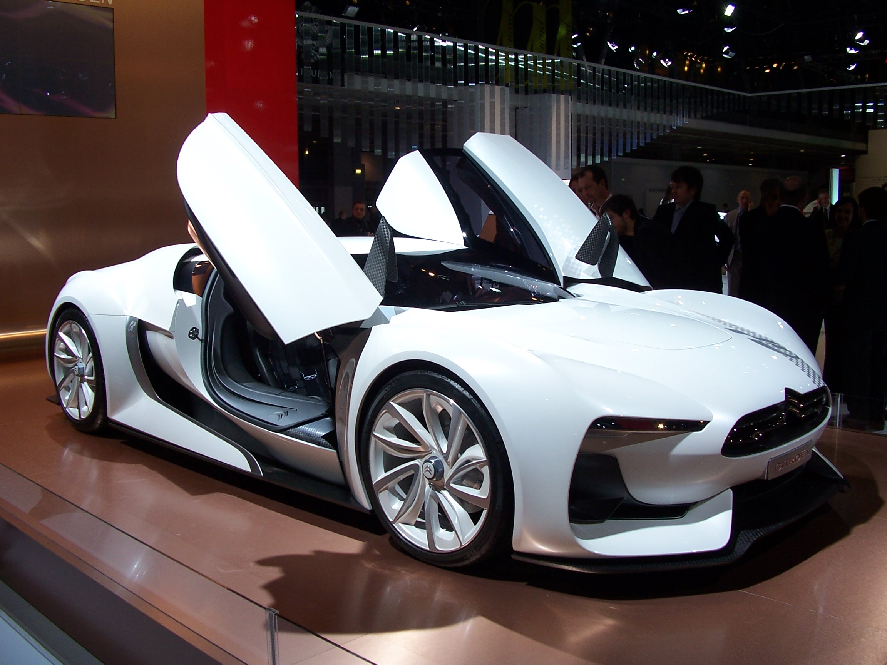
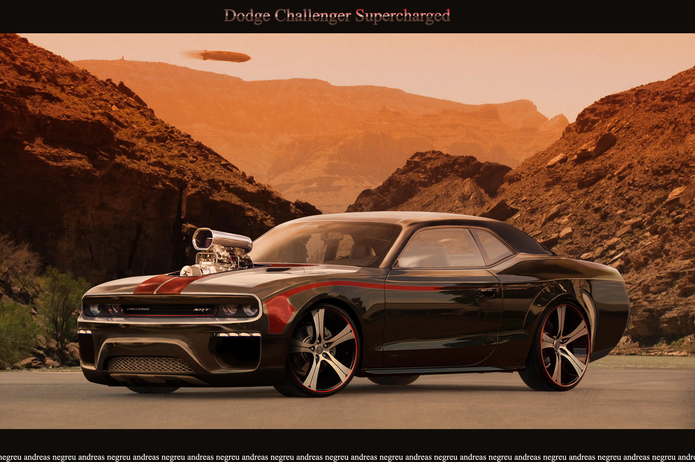

Chrysler
El Chrysler 300C es un lujoso automóvil de turismo del segmento E producido por el fabricante estadounidense Chrysler desde fines del año 2004. Es un cinco plazas con motor delantero longitudinal y tracción trasera o a las cuatro ruedas, que reemplaza al Chrysler 300M. Está disponible con carrocerías sedán de cuatro puertas y familiar (Touring) de cinco puertas. Ésta última se vendió en América del Norte como Dodge con la denominación Dodge Magnum, con un diseño exterior similar a otros modelos de Dodge.
Citroën
El Citroën C-Airplay es un prototipo de automóvil presentado por la marca de automóviles francesa Citroën por primera vez al público en la exposición Mundial del Automóvil de París - el 2 de octubre de 2008 y en el salón del automóvil de Genòva 2 de marzo de 2008. Desde su fundación, Citröen ha producido vehículos de pasajeros de carácter practico e innovador. Al mismo tiempo y gracias a su participación en eventos mundiales como el Rally París-Dakar y el WCR Wordl Rally Championship Citröen ha trabajado para revolucionar el terreno del rendimiento deportivo.
Dodge
El Dodge Challenger fue el último del grupo de los «Pony Cars», pero pasó el tiempo sabiamente, perfeccionando su entrada. Pocas palabras en el mundo automotor han dejado el legado tanto en producción en serie como en el mundo del circuito y cuarto de milla. Sin duda ha dejado huella en la memoria de los aficionados a los "muscle cars” o simplemente en los conocedores de lo que es el poder a la americana. Como heredero de la última generación de los Muscle Cars, el Dodge Challenger marcó época con respecto a su estilo y potencia.